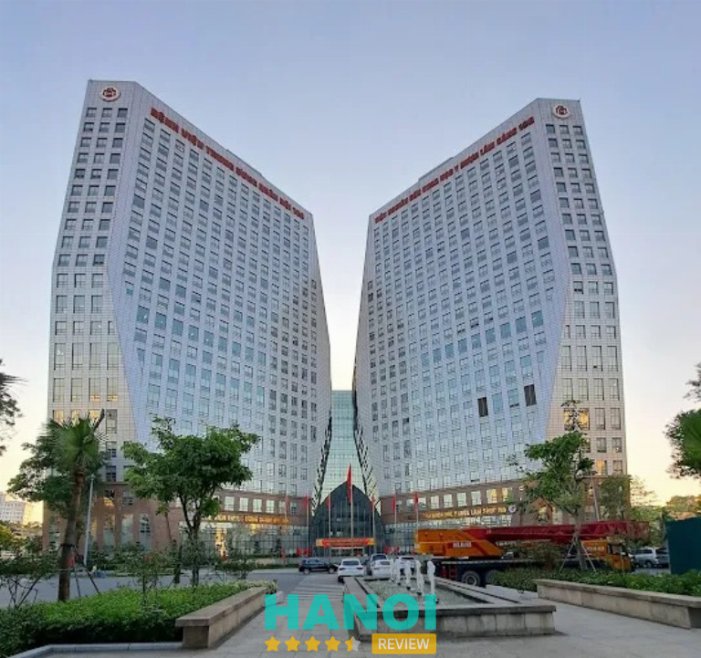
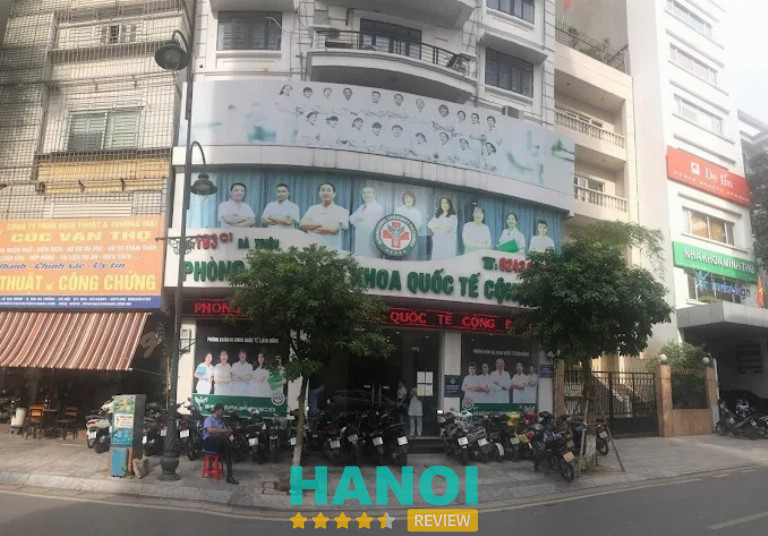
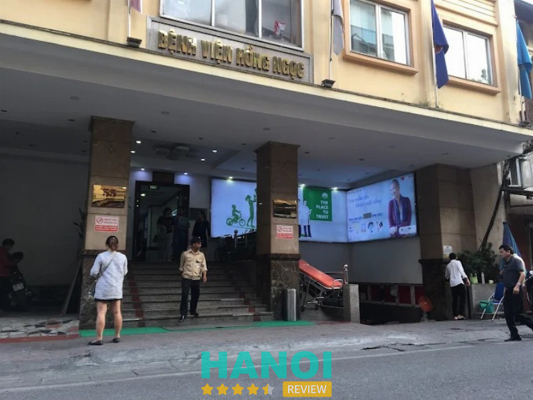

10 Địa chỉ khám trĩ ở Hà Nội thăm khám kín đáo và điều trị hiệu quả
Bệnh trĩ không chỉ gây ra những cơn đau rát, chảy máu khó chịu mà còn ảnh hưởng trực tiếp đến chất lượng cuộc sống và tâm lý người bệnh. Việc tìm kiếm một địa chỉ khám trĩ ở Hà Nội đáng tin cậy là bước ngoặt quan trọng để bạn sớm thoát khỏi nỗi ám ảnh này. Hãy cùng tìm hiểu những tiêu chuẩn vàng và gợi ý chất lượng nhất giúp bạn lấy lại sự tự tin.
Top 10 Địa chỉ khám trĩ tại Hà Nội uy tín, chất lượng cao
Việc lựa chọn đúng cơ sở y tế chuyên khoa sẽ giúp bệnh nhân tiết kiệm thời gian, chi phí và hạn chế tối đa các biến chứng nguy hiểm về sau. Người bệnh có thể tham khảo một số địa chỉ thăm khám và điều trị bệnh trĩ như sau:
Bệnh viện Hữu nghị Việt Đức – P. Hoàn Kiếm
Bệnh viện Hữu nghị Việt Đức vận hành Trung tâm Phẫu thuật Đại trực tràng – Tầng sinh môn, đơn vị chuyên sâu trong điều trị bệnh trĩ tại tuyến đầu. Các phương pháp phẫu thuật hiện tại được triển khai đa dạng, đáp ứng nhu cầu điều trị từ mức độ nhẹ đến phức tạp.
Kỹ thuật điều trị tại đây bao gồm nhiều lựa chọn tối ưu:
- Phẫu thuật Longo: Sử dụng máy khâu vòng cắt bỏ khoanh niêm mạc, giúp giảm đau, rút ngắn thời gian nằm viện từ 1 đến 2 ngày.
- Phẫu thuật THD: Triệt mạch và treo trĩ dưới hướng dẫn của siêu âm Doppler, bảo tồn cấu trúc ống hậu môn.
- Cắt trĩ kinh điển (Milligan-Morgan hoặc Ferguson): Dành cho các trường hợp trĩ hỗn hợp hoặc có biến chứng tắc mạch.
- Tán trĩ bằng Laser (LHP): Kỹ thuật xâm lấn tối thiểu giúp xơ hóa búi trĩ và phục hồi nhanh.
Quy trình thăm khám được phân chia theo các khu vực cụ thể tại cổng Phủ Doãn. Khoa Khám bệnh tại số 16-18 dành cho đối tượng sử dụng BHYT với chi phí thấp. Khoa Khám theo yêu cầu C4 và Khoa Điều trị theo yêu cầu 1C cung cấp dịch vụ khám chuyên gia, giáo sư với quy trình nhanh gọn, có khả năng thực hiện phẫu thuật ngay trong ngày.
Mức chi phí thăm khám lâm sàng dao động từ 40.000đ đến 500.000đ. Giá phẫu thuật cắt trĩ kinh điển khoảng 2,5 – 5 triệu đồng, trong khi phương pháp Longo có chi phí từ 15 – 25 triệu đồng tùy thuộc vào vật tư tiêu hao. Người bệnh nên có mặt trước 7:30 sáng để hoàn tất các xét nghiệm cận lâm sàng và nội soi cần thiết.
Thông tin liên hệ:
- Địa chỉ: Số 40 Tràng Thi, P. Hoàn Kiếm, Hà Nội
- Điện thoại: 1900 1902
- Email: congtacxahoibvvd@gmail.com
- Website: benhvienvietduc.org
- Facebook: fb.com/bvvietduc
Bệnh viện Y học cổ truyền Trung Ương – P. Hai Bà Trưng
Khám trĩ ở Hà Nội là nhu cầu của rất nhiều người khi gặp phải những triệu chứng khó chịu tại vùng hậu môn. Trong số các địa chỉ uy tín, Bệnh viện Y học Cổ truyền Trung ương nổi lên như một đơn vị đầu ngành, nổi tiếng với việc kết hợp nhuần nhuyễn giữa tinh hoa y học dân tộc và công nghệ y khoa hiện đại. Đây là điểm đến tin cậy cho những ai đang tìm kiếm giải pháp điều trị trĩ toàn diện và an toàn.
Sức hút của đơn vị đến từ sự góp mặt của đội ngũ chuyên gia, bác sĩ và các thầy thuốc ưu tú có tay nghề cao, dày dặn kinh nghiệm trong lĩnh vực hậu môn trực tràng. Tùy vào mức độ nặng nhẹ, người bệnh sẽ được áp dụng các phương pháp điều trị đa dạng:
- Nội khoa: Sử dụng các bài thuốc Đông y độc quyền dưới dạng thuốc uống, thuốc ngâm hoặc thuốc bôi. Phương pháp này hỗ trợ nhuận tràng, giảm tình trạng sưng đau và giúp co búi trĩ hiệu quả cho các trường hợp bệnh ở giai đoạn nhẹ.
- Thủ thuật: Áp dụng kỹ thuật tiêm xơ, thắt vòng cao su hoặc thắt trĩ bằng phương pháp cải tiến giúp giảm thiểu cảm giác đau đớn và rút ngắn thời gian hồi phục cho bệnh nhân.
- Phẫu thuật: Đối với các trường hợp trĩ nặng ở độ 3 hoặc độ 4, bệnh viện triển khai các kỹ thuật hiện đại như Longo, phẫu thuật bằng sóng cao tần (HCPT) hoặc Laser.
Điểm cộng lớn khi khám trĩ ở Hà Nội tại đây chính là quy trình chăm sóc hậu phẫu kết hợp dùng thuốc Đông y, giúp vết thương mau lành, giảm thiểu biến chứng và hạn chế tối đa nguy cơ tái phát. Nếu cần tư vấn kỹ hơn về các gói dịch vụ hoặc đặt lịch thăm khám, việc liên hệ trực tiếp với bộ phận hỗ trợ sẽ giúp nhận được hướng dẫn chi tiết nhất.
Thông tin liên hệ:
- Địa chỉ: 29 Nguyễn Bỉnh Khiêm, P. Hai Bà Trưng, Hà Nội
- Điện thoại: 024 3826 3616
- Email: benhvienyhoccotruyentw@gmail.com
- Website: benhvienyhoccotruyentrunguong.vn
- Facebook: fb.com/BVYHCTTW
Bệnh viện Bạch Mai – P. Kim Liên
Khi cần khám trĩ ở Hà Nội, Bệnh viện Bạch Mai là cơ sở y tế hạng đặc biệt được nhiều người tìm đến. Trung tâm Tiêu hóa – Gan mật của bệnh viện được đánh giá là đơn vị chuyên sâu trong thăm khám và điều trị các bệnh lý hậu môn trực tràng, bao gồm bệnh trĩ ở nhiều mức độ khác nhau.
Tại trung tâm quy tụ nhiều bác sĩ có chuyên môn sâu trong lĩnh vực tiêu hóa và hậu môn trực tràng. Một số chuyên gia tiêu biểu gồm PGS.TS. Nguyễn Công Long – Giám đốc Trung tâm Tiêu hóa – Gan mật, cùng BSCKI. Nguyễn Tiến Tùng, ThS.BS. Hoàng Mạnh Hùng và đội ngũ bác sĩ nội trú. Hoạt động chuyên môn tập trung vào nội soi tiêu hóa, chẩn đoán và điều trị các bệnh lý ống tiêu hóa cũng như hậu môn trực tràng.
Trong quá trình khám trĩ ở Hà Nội, bệnh viện ứng dụng nhiều thiết bị và kỹ thuật chẩn đoán hiện đại nhằm xác định chính xác tình trạng bệnh. Hệ thống nội soi ống mềm được sử dụng để quan sát niêm mạc hậu môn và trực tràng, từ đó đánh giá mức độ trĩ từ độ 1 đến độ 4 và sàng lọc các bệnh lý liên quan như ung thư đại trực tràng.
Các phương pháp được áp dụng tại bệnh viện gồm:
- Nội soi hậu môn trực tràng để đánh giá tổn thương và phân loại mức độ trĩ.
- Điều trị nội khoa đối với trường hợp trĩ giai đoạn nhẹ.
- Can thiệp ngoại khoa như thắt trĩ qua nội soi hoặc phẫu thuật cắt trĩ bằng kỹ thuật hiện đại khi bệnh ở giai đoạn nặng.
Chi phí khám lâm sàng dao động khoảng 150.000 – 450.000 đồng tùy loại hình khám. Phẫu thuật cắt trĩ theo yêu cầu có mức cao nhất khoảng 7.900.000 đồng cho mỗi ca. Việc đặt lịch trước có thể thực hiện qua tổng đài 1900.888.866, website hoặc ứng dụng Bạch Mai Care để sắp xếp thời gian thăm khám.
Thông tin liên hệ:
- Địa chỉ: 78 Giải Phóng, P. Kim Liên, Hà Nội
- Điện thoại: 1900 888 866
- Email: congvandenctxh@gmail.com
- Website: bachmai.gov.vn
- Facebook: fb.com/benhvienbachmai1911
Bệnh viện Trung Ương Quân Đội 108 – P. Hai Bà Trưng
Bệnh viện Trung ương Quân đội 108 hiện là cơ sở y tế uy tín cho người dân có nhu cầu khám trĩ ở Hà Nội. Tại đây, các phương pháp điều trị được triển khai dựa trên sự kết hợp giữa kỹ thuật ngoại khoa hiện đại và trang thiết bị chuyên dụng.

Các công nghệ phẫu thuật đang được áp dụng bao gồm:
- Phương pháp Longo: Sử dụng máy khâu nối cắt khoanh niêm mạc trên đường lược để triệt nguồn máu nuôi búi trĩ, giúp giảm đau và rút ngắn thời gian nằm viện từ 1–4 ngày.
- Phương pháp HCPT: Ứng dụng sóng điện từ cao tần làm đông mạch máu và dùng dao điện cắt búi trĩ, hạn chế chảy máu và không để lại sẹo.
- Phương pháp PPH: Sử dụng máy kẹp cắt vòng niêm mạc phía trên đường lược, đạt hiệu quả cao với trĩ nội độ 3 và độ 4.
Về nhân sự, đội ngũ chuyên gia tại Viện Phẫu thuật Tiêu hóa (B3), tiêu biểu là PGS.TS Triệu Triều Dương, trực tiếp thực hiện quy trình chuyên môn. Hệ thống phòng mổ thông minh cùng thiết bị nội soi, MRI hỗ trợ xác định chính xác mức độ bệnh lý.
Mức chi phí tham khảo giai đoạn 2024 – 2026 cho phẫu thuật truyền thống từ 5.000.000 đến 7.000.000 VNĐ. Các kỹ thuật hiện đại như PPH hay Longo dao động từ 7.000.000 đến 15.000.000 VNĐ, chưa tính vật tư tiêu hao.
Việc áp dụng Bảo hiểm Y tế giúp giảm gánh nặng tài chính cho người bệnh. Quy trình bắt đầu tại Trung tâm Khám bệnh Đa khoa và Điều trị theo yêu cầu, qua các bước đăng ký, khám lâm sàng, nội soi và hội chẩn phương pháp phù hợp nhất.
Thông tin liên hệ:
- Địa chỉ: Số 1 Trần Hưng Đạo, P. Hai Bà Trưng, Hà Nội
- Điện thoại: 0971 830 166
- Email: bvtuqd108@benhvien108.vn
- Website: benhvien108.vn
- Facebook: fb.com/Benhvientwqd108
Bệnh viện Đại học Y Hà Nội – P. Kim Liên
Bệnh viện Đại học Y Hà Nội được nhiều người tìm kiếm khi cần bệnh viện khám trĩ ở Hà Nội uy tín nhờ sự kết hợp giữa đội ngũ giảng viên chuyên môn cao và quy trình làm việc được chuẩn hóa trong thăm khám hậu môn trực tràng. Cơ sở y tế này gắn liền với Trường Đại học Y Hà Nội, vì vậy nhiều bác sĩ tham gia thăm khám đồng thời là giảng viên và chuyên gia đầu ngành, có kinh nghiệm lâm sàng lâu năm trong điều trị bệnh trĩ và các bệnh lý tiêu hóa liên quan.

Người bệnh có thể được thăm khám bởi các chuyên gia có chuyên môn sâu trong lĩnh vực hậu môn trực tràng như Hà Văn Quyết, nguyên Giám đốc bệnh viện và Nguyễn Thanh Long với nhiều năm giảng dạy và điều trị các bệnh lý tiêu hóa, hậu môn trực tràng.
Quy trình thăm khám được xây dựng theo các bước rõ ràng nhằm hỗ trợ chẩn đoán và điều trị bệnh trĩ:
- Đăng ký khám tại Khoa Ngoại Tiêu hóa – Hậu môn Trực tràng, địa chỉ 1 Tôn Thất Tùng, Kim Liên, Đống Đa, Hà Nội
- Hệ thống đặt lịch trực tuyến qua tổng đài hoặc website nhằm giảm thời gian chờ
- Thăm khám lâm sàng, trao đổi triệu chứng như đau, chảy máu hoặc sa búi trĩ
- Chỉ định cận lâm sàng khi cần thiết như nội soi hậu môn – trực tràng, xét nghiệm máu hoặc đo điện tim
- Đánh giá mức độ trĩ từ độ 1 đến độ 4 để lựa chọn phương án điều trị phù hợp
Trong điều trị bệnh trĩ, bệnh viện áp dụng nhiều phương pháp hiện đại nhằm hỗ trợ can thiệp ít xâm lấn. Phương pháp Longo sử dụng máy khâu nối tự động để cắt trĩ, thường có thời gian nằm viện ngắn khoảng 1–3 ngày và được bảo hiểm y tế chi trả một phần. Công nghệ Laser Diode được sử dụng để tiêu búi trĩ, hạn chế chảy máu và giảm tổn thương mô xung quanh.
Chi phí thăm khám và điều trị có thể tham khảo theo từng hạng mục: phí khám ban đầu khoảng 300.000 – 500.000 đồng tùy lựa chọn bác sĩ, xét nghiệm và nội soi khoảng 500.000 – 1.500.000 đồng. Phẫu thuật cắt trĩ bằng các phương pháp như Longo hoặc Laser thường dao động từ 7.500.000 đến hơn 15.000.000 đồng tùy kỹ thuật áp dụng.
Thời gian làm việc từ thứ 2 đến thứ 6 (7h30 – 17h00) và thứ 7 (7h30 – 12h00), nghỉ chủ nhật. Nhiều người đang tìm bệnh viện khám trĩ ở Hà Nội uy tín thường cân nhắc cơ sở này khi cần thăm khám và đánh giá tình trạng bệnh trĩ.
Thông tin liên hệ:
- Địa chỉ: Số 1 Tôn Thất Tùng, P. Kim Liên, Hà Nội
- Điện thoại: 1900 6422
- Email: bvdhyhn@hmu.edu.vn
- Website: benhviendaihocyhanoi.com
- Facebook: fb.com/HMUHospital
Bệnh viện Quân đội 103 – P. Hà Đông
Bệnh viện Quân y 103 là địa chỉ y tế hạng I của quân đội, chuyên sâu trong việc áp dụng các kỹ thuật ngoại khoa hiện đại để điều trị bệnh trĩ. Đội ngũ chuyên gia trực tiếp thực hiện các phương pháp xâm lấn tối thiểu nhằm giảm đau, hạn chế chảy máu và tối ưu thời gian hồi phục cho người bệnh.
Việc khám trĩ ở Hà Nội tại bệnh viện bao gồm các kỹ thuật hiện đại:
- Phương pháp HCPT (Sóng cao tần): Sử dụng nhiệt điện trường làm đông mạch máu, loại bỏ búi trĩ nhanh chóng.
- Phẫu thuật Longo: Sử dụng máy khâu nối để kéo búi trĩ về vị trí cũ và giảm nguồn cung cấp máu, giúp búi trĩ tự teo, đảm bảo tính thẩm mỹ.
- Công nghệ Laser: Sử dụng năng lượng laser triệt tiêu búi trĩ, hạn chế tổn thương mô xung quanh.
Mức phí được xác định dựa trên tình trạng bệnh lý và phương pháp can thiệp:
- Khám lâm sàng & Xét nghiệm: 600.000đ – 1.300.000đ.
- Phẫu thuật cắt trĩ có BHYT: Khoảng 2.655.000 VNĐ.
- Dịch vụ tự nguyện/Kỹ thuật cao (HCPT, PPH, Longo): 8.000.000đ – 15.000.000đ.
Bác sĩ chuyên khoa tiêu hóa hoặc hậu môn trực tràng trực tiếp kiểm tra, chỉ định cận lâm sàng như nội soi và xét nghiệm máu. Căn cứ trên kết quả thực tế, bác sĩ tư vấn phương pháp phẫu thuật phù hợp. Người đến khám nên mang theo thẻ BHYT và các kết quả cũ để được hỗ trợ tối ưu về chi phí.
Thông tin liên hệ:
- Địa chỉ: Số 261 Phùng Hưng, P. Hà Đông, Hà Nội
- Điện thoại: 0967 811 616
- Email: hospital103@benhvien103.vn
- Website: benhvien103.vn
- Facebook: fb.com/benhvien103.hvqy
Phòng khám Đa khoa Hưng Thịnh – Đống Đa
Phòng khám Đa khoa Hưng Thịnh là cơ sở y tế tư nhân tại Hà Nội có định hướng chuyên sâu trong thăm khám và điều trị các bệnh lý hậu môn trực tràng, trong đó có bệnh trĩ ở nhiều cấp độ. Dịch vụ khám trĩ được triển khai với mức chi phí ưu đãi, tạo điều kiện để người có nhu cầu kiểm tra và phát hiện sớm các dấu hiệu bất thường tại khu vực hậu môn.
Mức phí khám trĩ và nội soi hậu môn trực tràng tại phòng khám dao động khoảng 50.000 – 60.000 VNĐ, thấp hơn so với nhiều cơ sở y tế tư nhân khác. Chi phí này giúp người bệnh dễ dàng tiếp cận dịch vụ kiểm tra ban đầu, đặc biệt trong trường hợp xuất hiện các biểu hiện như đau rát, chảy máu khi đi vệ sinh hoặc cảm giác cộm vùng hậu môn.
Phòng khám ứng dụng các thiết bị và phương pháp điều trị hiện đại trong quá trình thăm khám và can thiệp các bệnh lý trĩ. Việc áp dụng công nghệ mới giúp quá trình điều trị diễn ra nhẹ nhàng hơn và hỗ trợ rút ngắn thời gian phục hồi.
Một số đặc điểm đáng chú ý tại Phòng khám Đa khoa Hưng Thịnh gồm:
- Chuyên sâu lĩnh vực hậu môn trực tràng, tiếp nhận khám và điều trị bệnh trĩ.
- Chi phí khám trĩ và nội soi ưu đãi khoảng 50.000 – 60.000 VNĐ.
- Ứng dụng công nghệ điều trị hiện đại trong xử lý bệnh trĩ.
- Hỗ trợ phương pháp điều trị hướng đến hạn chế cảm giác đau và rút ngắn thời gian phục hồi.
Với định hướng chuyên khoa hậu môn trực tràng cùng mức chi phí khám ban đầu hợp lý, Phòng khám Đa khoa Hưng Thịnh được nhiều người cân nhắc khi tìm kiếm địa chỉ khám trĩ tại Hà Nội. Người có nhu cầu thăm khám có thể chủ động liên hệ phòng khám để đặt lịch kiểm tra và được tư vấn phương án phù hợp với tình trạng bệnh.
Thông tin liên hệ:
- Địa chỉ: 380 Xã Đàn, Đống Đa, Hà Nội
- Điện thoại: 0352 612 932
- Email: phongkhamhungthinhhanoi.com@gmail.com
- Website: phongkhamhungthinhhanoi.com
Phòng khám Đa khoa Quốc tế Cộng Đồng – Hai Bà Trưng
Phòng khám Đa khoa Quốc tế Cộng Đồng được biết đến là một trong những cơ sở y tế cung cấp dịch vụ khám chữa bệnh chất lượng cao với việc ứng dụng công nghệ hiện đại. Đây là điểm đến cho những người đang tìm kiếm phòng khám trĩ ở Hà Nội có sự hỗ trợ của các chuyên gia đầu ngành.

Chất lượng chuyên môn tại đây được khẳng định qua đội ngũ bác sĩ chuyên khoa có trên 30 năm kinh nghiệm, từng công tác tại các bệnh viện lớn. Điểm nhấn nổi bật trong phương pháp điều trị là công nghệ đột phá HCPT II. Đây là kỹ thuật xâm lấn tối thiểu tiên tiến nhất hiện nay với các đặc điểm cụ thể:
- Cơ chế hoạt động: Sử dụng sóng cao tần sản sinh nhiệt nội sinh để làm đông thắt mạch máu và cắt búi trĩ ngay lập tức.
- Hiệu quả thực hiện: Phương pháp không dùng dao kéo truyền thống, hạn chế tình trạng đau đớn và ít chảy máu.
- Thời gian: Mỗi ca thủ thuật chỉ kéo dài khoảng 15-20 phút.
- Khả năng hồi phục: Người bệnh có thể tự đi lại và ra về trong ngày, không phát sinh nhu cầu nằm viện dài ngày.
Chi phí thăm khám được niêm yết công khai và thường xuyên đi kèm các gói hỗ trợ khi người bệnh đặt lịch trước qua hệ thống trực tuyến. Các hạng mục chi phí tham khảo bao gồm:
- Nội soi hậu môn không dây: Khoảng 100.000 VNĐ.
- Phí thủ thuật: Các đợt hỗ trợ giảm 50% chi phí thủ thuật và điều trị.
- Khám lâm sàng: Miễn phí thăm khám hoặc hỗ trợ chi phí hội chẩn cùng chuyên gia.
Người bệnh đang tìm kiếm phòng khám trĩ ở Hà Nội có thể lựa chọn dịch vụ tại đây để trải nghiệm công nghệ HCPT II hiện đại. Với các đợt ưu đãi giảm phí thủ thuật và khám lâm sàng miễn phí, hãy chủ động đặt lịch hẹn online ngay hôm nay để nhận hỗ trợ nhanh chóng từ chuyên gia.
Thông tin liên hệ:
- Địa chỉ: 193 Bà Triệu, Hai Bà Trưng, Hà Nội
- Điện thoại: 0383 666 193
- Website: dakhoacongdong.com.vn
Bệnh viện Thu Cúc – P. Tây Hồ
Bệnh viện Đa khoa Quốc tế Thu Cúc TCI là một địa chỉ khám trĩ ở Hà Nội được nhiều người tìm kiếm khi cần thăm khám và điều trị các bệnh lý hậu môn trực tràng. Cơ sở này được đánh giá cao nhờ sự kết hợp giữa đội ngũ bác sĩ chuyên khoa và hệ thống công nghệ điều trị hiện đại, hướng tới phương pháp ít xâm lấn và rút ngắn thời gian hồi phục.
Không gian khám chữa bệnh được duy trì sạch sẽ, quy trình tiếp nhận và thực hiện thủ tục tương đối nhanh gọn, tạo điều kiện thuận tiện cho quá trình thăm khám.
Các phương pháp điều trị trĩ tại Thu Cúc TCI được áp dụng tùy theo tình trạng bệnh lý cụ thể:
- Đốt trĩ Laser Diode: công nghệ xuất xứ châu Âu, không dùng dao mổ, hạn chế xâm lấn, giúp giảm đau và có thể ra về trong ngày.
- Phẫu thuật Longo: sử dụng máy khâu nối để triệt tiêu nguồn máu nuôi búi trĩ, thường áp dụng cho trĩ nội độ 3 – 4.
- Phẫu thuật Milligan Morgan và HCPT: được chỉ định theo từng mức độ bệnh lý.
Chi phí khám ban đầu khoảng 200.000 VNĐ, có thể thay đổi tùy thời điểm và bác sĩ phụ trách. Ngoài khám lẻ, cơ sở còn triển khai các gói khám chuyên sâu dành cho bệnh lý hậu môn trực tràng nhằm tối ưu danh mục xét nghiệm.
Hệ thống cũng áp dụng bảo hiểm y tế và bảo hiểm bảo lãnh, giúp giảm áp lực chi phí cho người có nhu cầu khám trĩ ở Hà Nội. Người bệnh thường lựa chọn đặt lịch trước qua tổng đài hoặc website để hạn chế thời gian chờ.
Thông tin liên hệ:
- Địa chỉ: 286 Thụy Khuê, P. Tây Hồ, Hà Nội
- Điện thoại: 1900 558 892
- Email: cskh@thucuchospital.vn
- Website: benhvienthucuc.vn
Bệnh viện Đa khoa Hồng Ngọc – P. Ba Đình
Bệnh viện Đa khoa Hồng Ngọc là một trong những cơ sở y tế tư nhân được nhiều người tìm hiểu khi cần khám trĩ ở Hà Nội. Nơi đây được biết đến với mô hình khám chữa bệnh theo tiêu chuẩn dịch vụ, chú trọng sự riêng tư trong quá trình thăm khám. Không gian bệnh viện được thiết kế theo hướng hiện đại, sạch sẽ và tạo cảm giác thoải mái cho người đến khám.

Trong lĩnh vực hậu môn trực tràng, bệnh viện triển khai khám và đánh giá tình trạng bệnh trĩ thông qua thăm khám lâm sàng kết hợp với các phương pháp hỗ trợ chẩn đoán. Quy trình được tổ chức theo hướng gọn gàng, giúp người bệnh có thể hoàn thành các bước kiểm tra trong thời gian ngắn. Đây là yếu tố khiến nhiều người cân nhắc lựa chọn khi cần khám trĩ ở Hà Nội với yêu cầu nhanh và kín đáo.
Một số đặc điểm thường được nhắc đến khi tìm hiểu về Bệnh viện Đa khoa Hồng Ngọc:
- Không gian khám chữa bệnh thiết kế hiện đại, tạo cảm giác thoải mái
- Mô hình dịch vụ y tế chú trọng trải nghiệm và sự riêng tư khi thăm khám
- Quy trình khám được sắp xếp gọn gàng, phù hợp với người có nhu cầu khám nhanh
- Khu vực tiếp nhận và hỗ trợ khách hàng hoạt động chuyên nghiệp
- Thực hiện khám và đánh giá các vấn đề hậu môn trực tràng, trong đó có bệnh trĩ
Với những yếu tố trên, Bệnh viện Đa khoa Hồng Ngọc thường được nhiều người tìm hiểu khi cần khám trĩ ở Hà Nội, đặc biệt trong các trường hợp mong muốn không gian khám chữa bệnh riêng tư và dịch vụ chăm sóc theo mô hình bệnh viện tư nhân.
Thông tin liên hệ:
- Địa chỉ: Số 55 Yên Ninh, P. Ba Đình, Hà Nội
- Điện thoại: 024 7300 8866
- Email: info@hongngochospital.vn
- Website: hongngochospital.vn
- Facebook: fb.com/BenhvienHongNgoc
Tiêu chí chọn nơi khám trĩ ở Hà Nội phù hợp
Để đảm bảo quá trình điều trị diễn ra an toàn và hiệu quả, bạn nên cân nhắc kỹ lưỡng các yếu tố nền tảng dưới đây trước khi quyết định.
- Giấy phép hoạt động: Cơ sở phải được Bộ hoặc Sở Y tế cấp phép công khai, đảm bảo tính pháp lý và an toàn tuyệt đối cho mọi bệnh nhân.
- Đội ngũ bác sĩ: Hội tụ những chuyên gia đầu ngành về hậu môn trực tràng, giàu kinh nghiệm lâm sàng và luôn tận tâm với từng ca bệnh cụ thể.
- Cơ sở vật chất: Hệ thống phòng khám sạch sẽ, vô trùng cùng trang thiết bị máy móc hiện đại hỗ trợ chẩn đoán chính xác mức độ bệnh lý hiện tại.
- Phương pháp điều trị: Áp dụng các công nghệ tiên tiến như PPH hay HCPT giúp giảm thiểu đau đớn, không chảy máu và rút ngắn thời gian phục hồi nhanh.
- Chi phí minh bạch: Mọi khoản phí thăm khám và điều trị phải được niêm yết rõ ràng, tư vấn cụ thể cho bệnh nhân trước khi tiến hành thực hiện.
- Bảo mật thông tin: Cam kết giữ kín hồ sơ bệnh án và thông tin cá nhân, tạo không gian riêng tư giúp người bệnh thoải mái chia sẻ tình trạng.
- Dịch vụ hỗ trợ: Quy trình đặt lịch hẹn nhanh chóng, nhân viên y tế hướng dẫn nhiệt tình giúp người bệnh không phải chờ đợi lâu khi đến khám.
Việc lựa chọn địa chỉ uy tín để điều trị dứt điểm nỗi lo thầm kín là yếu tố then chốt. Danh sách này cung cấp thông tin đầy đủ giúp bạn quyết định nên đi khám trĩ ở Hà Nội tại đâu tốt nhất. Đừng vì tâm lý e ngại mà trì hoãn việc thăm khám, khiến bệnh chuyển biến nặng. Hãy chủ động chọn phòng khám phù hợp để bảo vệ sức khỏe và nhanh chóng lấy lại sự tự tin trong cuộc sống!
Có thể bạn quan tâm
- 10 Phòng khám Đông Y tại Hà Nội uy tín, đáng tin cậy nhất
- 5 Phòng khám Nam Khoa tại Hà Nội chất lượng, bảo mật thông tin
- 5 Phòng khám phụ khoa tại Hà Nội uy tín, BS nhiều kinh nghiệm
- 10 Địa chỉ khám vô sinh hiếm muộn ở Hà Nội uy tín
DOANH NGHIỆP: Đăng tải thông tin MIỄN PHÍ.
Tin đọc nhiều


4 Phòng khám tai mũi họng tại Q. Ba Đình uy tín, khám hiệu quả
Phòng khám tai mũi họng tại Q. Ba Đình luôn là lựa chọn hàng đầu của nhiều người khi cần khám và điều trị các...

5 Phòng khám sản phụ khoa tại Q. Nam Từ Liêm uy tín
Phòng khám phụ khoa tại Q. Nam Từ Liêm là địa chỉ mà nhiều chị em tin tưởng khi cần kiểm tra và chăm sóc...

10 Địa chỉ khám tổng quát ở Hà Nội uy tín giúp bảo vệ sức...
Việc chủ động đi khám tổng quát ở Hà Nội là giải pháp tối ưu giúp bạn tầm soát sớm các bệnh lý nguy hiểm...

5 Phòng khám sản phụ khoa tại Q. Long Biên được đánh giá cao
Trong hành trình chăm sóc sức khỏe, việc tìm kiếm một phòng khám phụ khoa tại Q. Long Biên uy tín, đáp ứng đầy đủ...

Trở thành người đầu tiên bình luận cho bài viết này!